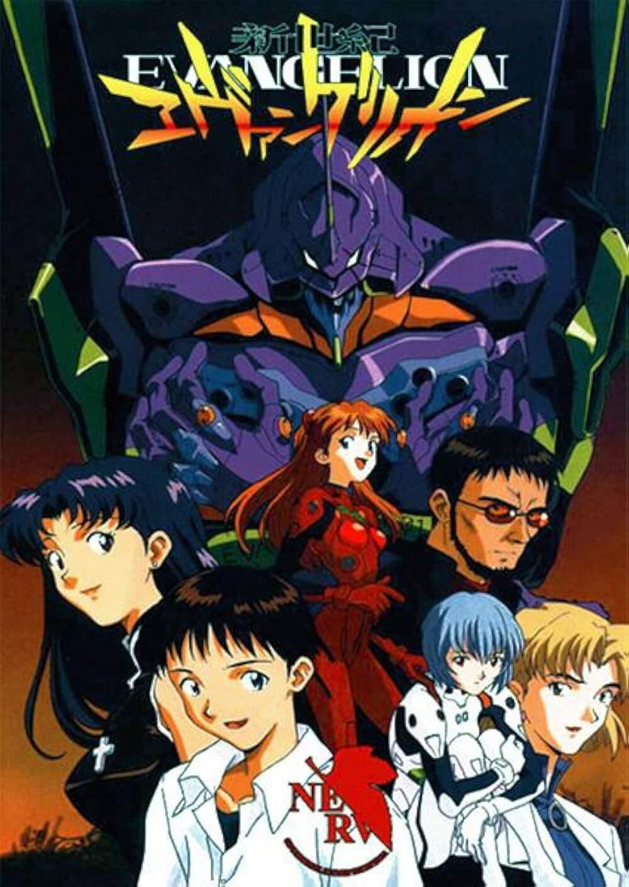
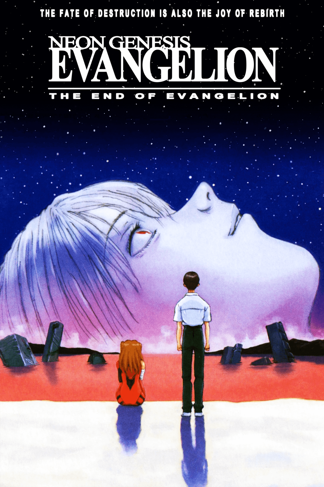
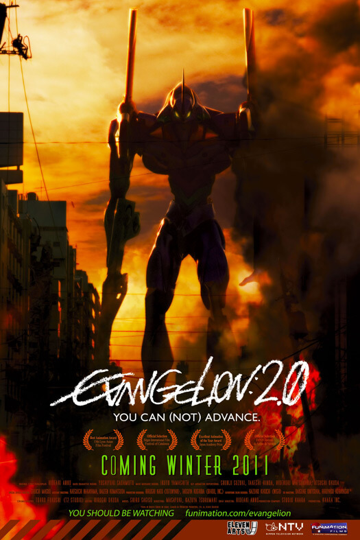
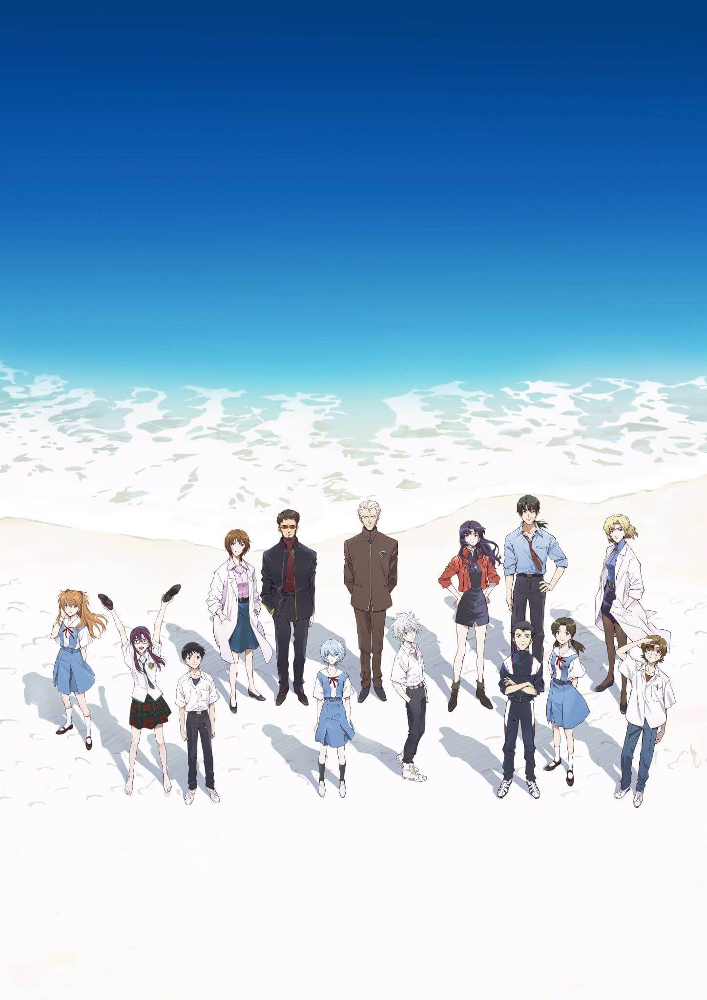
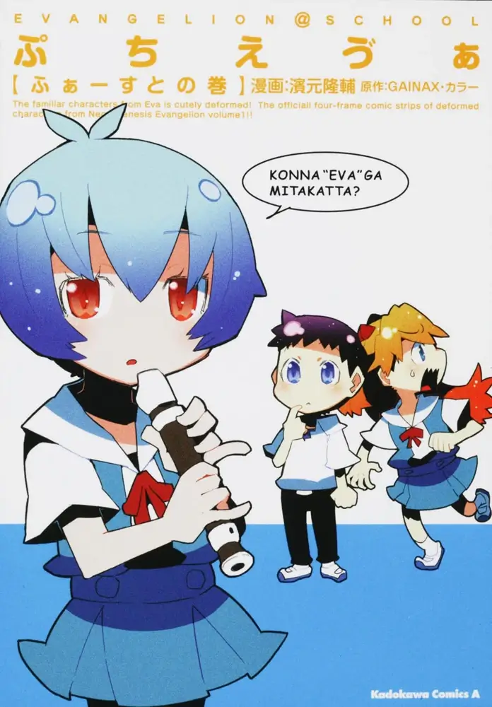
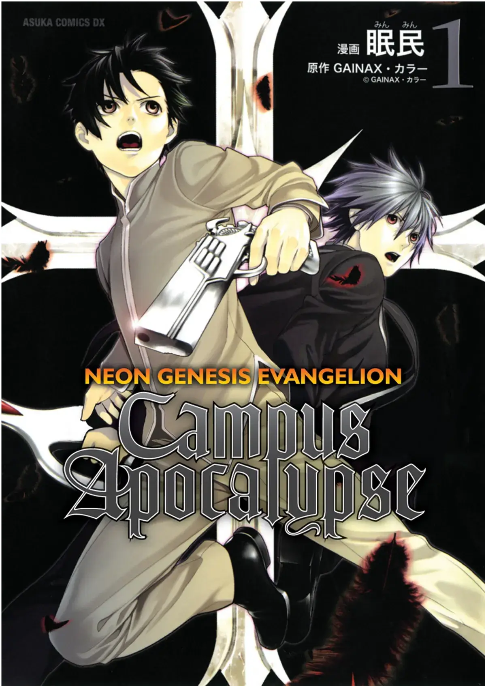
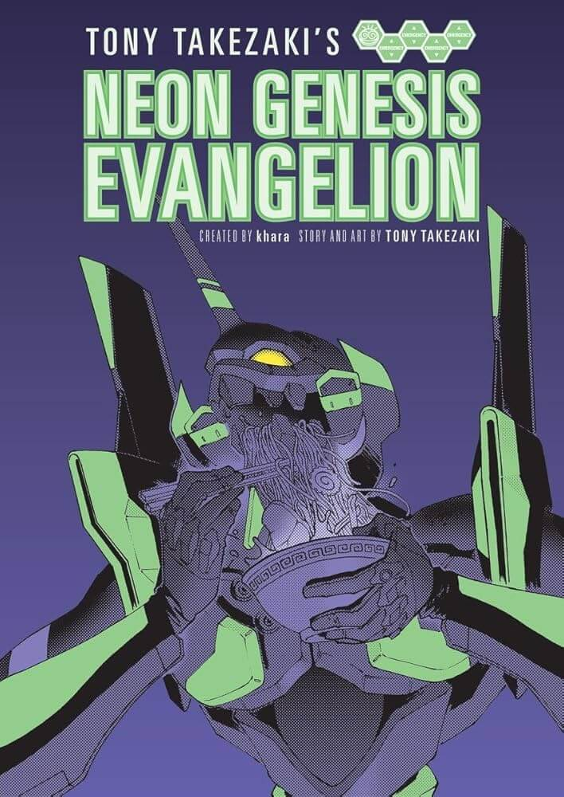
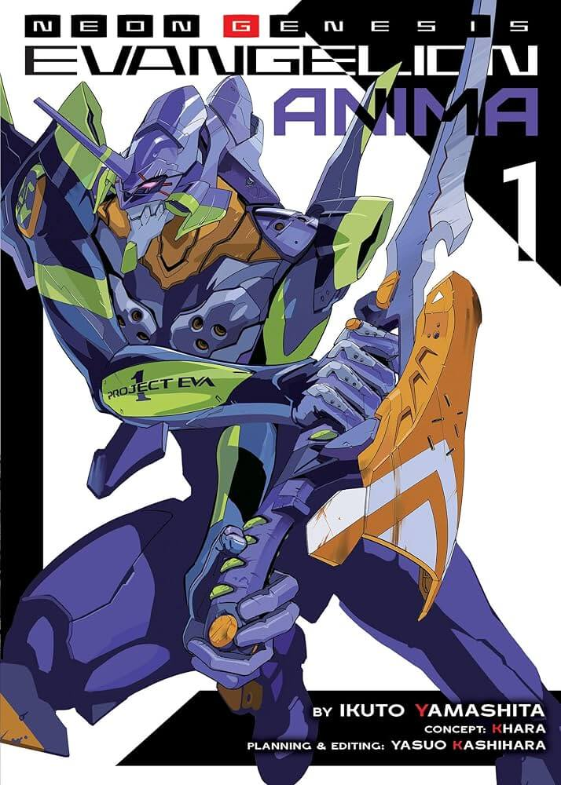
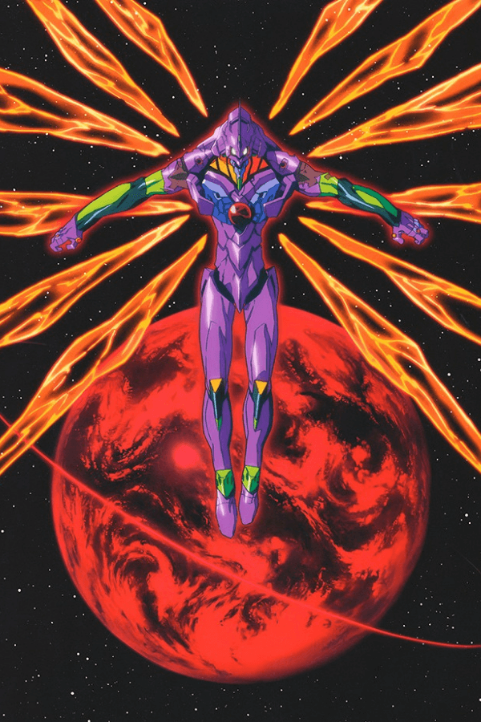
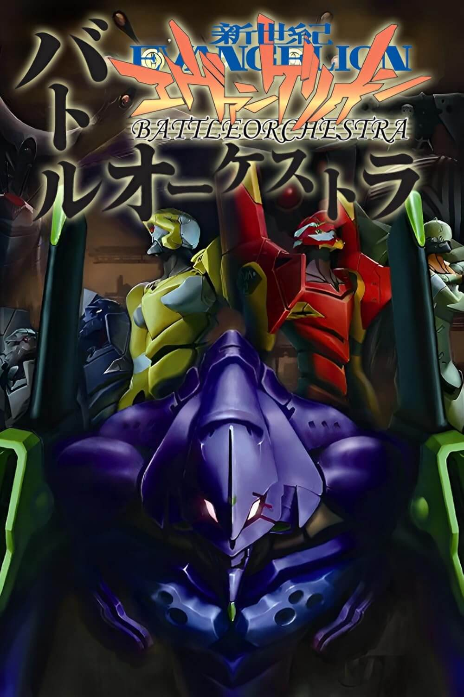

Neon Genesis Evangelion

The End of Evangelion

Evangelion: 1.0 Você (não) Está sozinho.

Evangelion: 2.0 Você (não) Pode Avançar.

Evangelion: 3.0 Você (não) Pode Refazer

Evangelion: 3.0 + 1.0 A Esperança

Neon Genesis Evangelion: Death and Rebirth

Neon Genesis Evangelion (Mangá)

Neon Genesis Evangelion: Angelic Days

Petit Eva

Neon Genesis Evangelion: Campus Apocalypse

Tony Takezaki's EVANGELION

EVANGELION ANIMA

Neon Genesis Evangelion 64

Neon Genesis Evangelion: Battle Orchestra